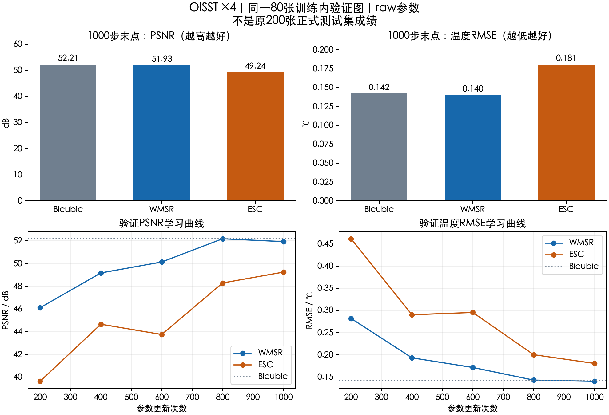
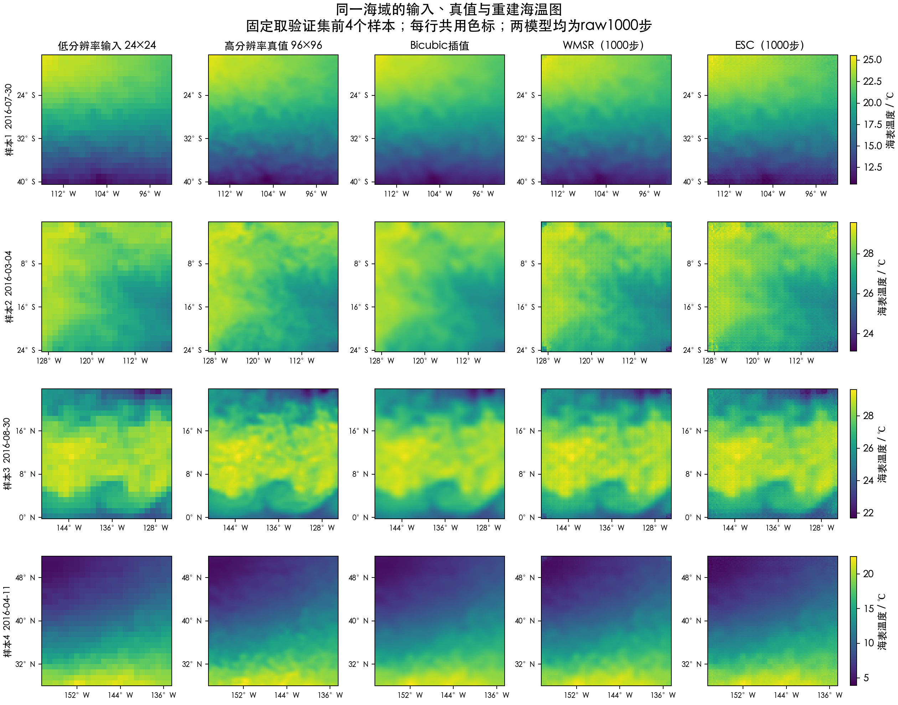
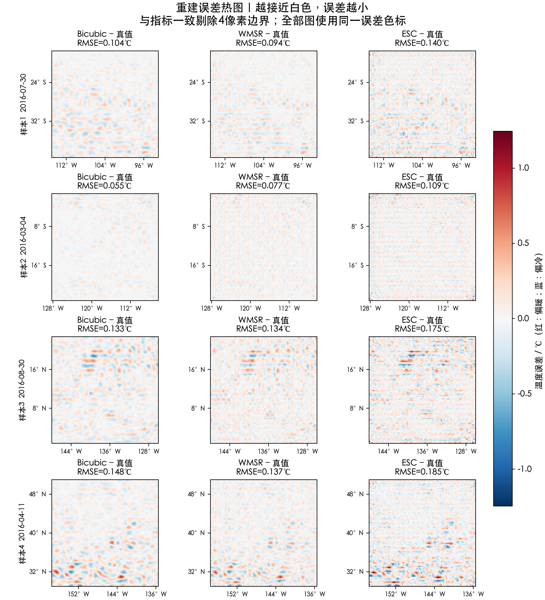

ESC与WMSR：1000步预实验结果
OISST ×4 · seed10 · 同一80图训练内验证 · 非原200图正式测试。ESC尚未超过WMSR，不代表充分收敛后的模型上限。

① 80图整体指标及学习曲线：PSNR越高越好，温度RMSE越低越好。
② 固定取验证集前4个样本。每行从左至右为输入、真值、插值、WMSR、ESC；同一行使用相同温度色标。
③ 所有图使用同一误差色标。红色偏暖、蓝色偏冷，越接近白色误差越小；按指标规则裁去4像素边界。